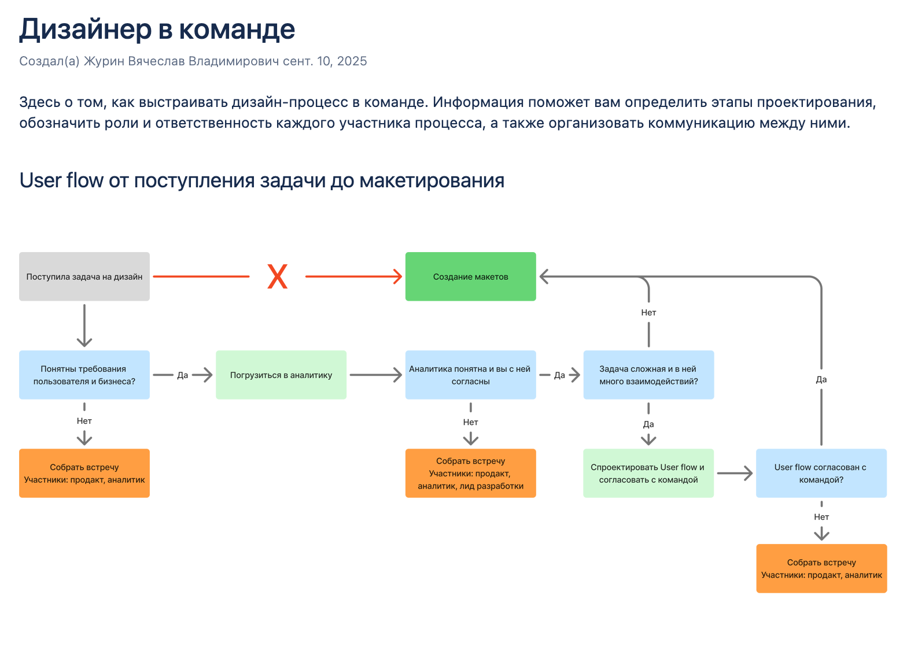

01
Онбординг
Забота о команде — инвестиция в стабильность и качество проектов
Задача
В крупных компаниях с усиленной безопасностью и сложными процессами новому дизайнеру особенно трудно: помимо продукта приходится разбираться с доступом к стендам ИФТ и ПСИ, настройкой ВПН, получением прав к дизайн-системам. Это отнимает силы и время, мешая сосредоточиться на главном.
Решение
Я создал в Confluence страницу онбординга для дизайнеров кластера. Там собраны ответы на все частые вопросы, инструкции по получению доступов и настройке рабочих инструментов. Регулярно поддерживаю её в актуальном состоянии и лично помогаю новым коллегам освоиться в продукте.
Это позволяет новичкам сосредоточиться на главном — на продукте и задачах, а не на бюрократии.
Результат
- Уже на второй месяц выходит на полноценную рабочую нагрузку
- Успешно проходит испытательный срок
- Сохраняет мотивацию и лояльность к компании


